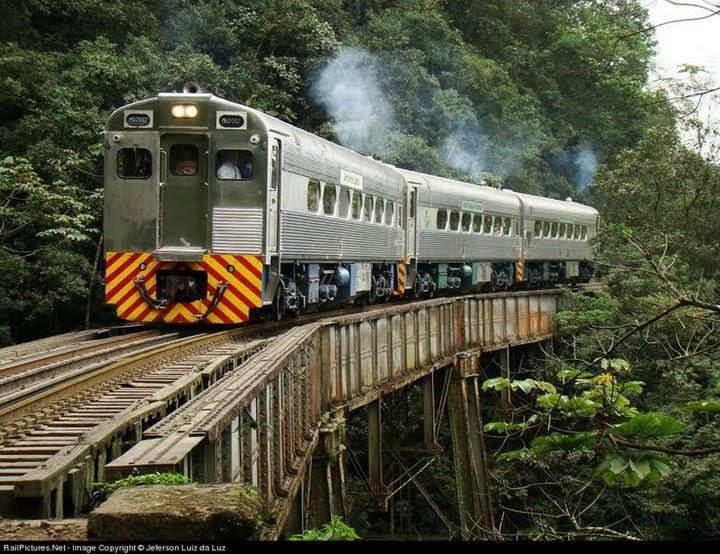
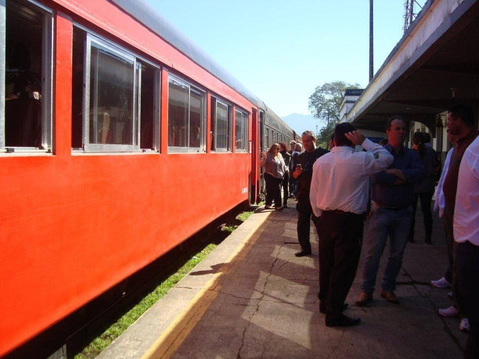
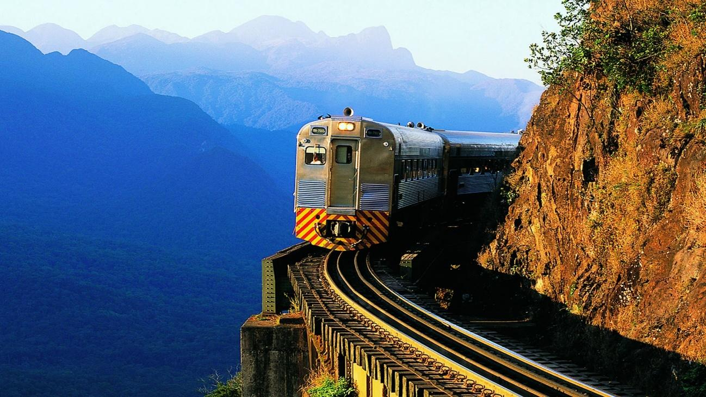
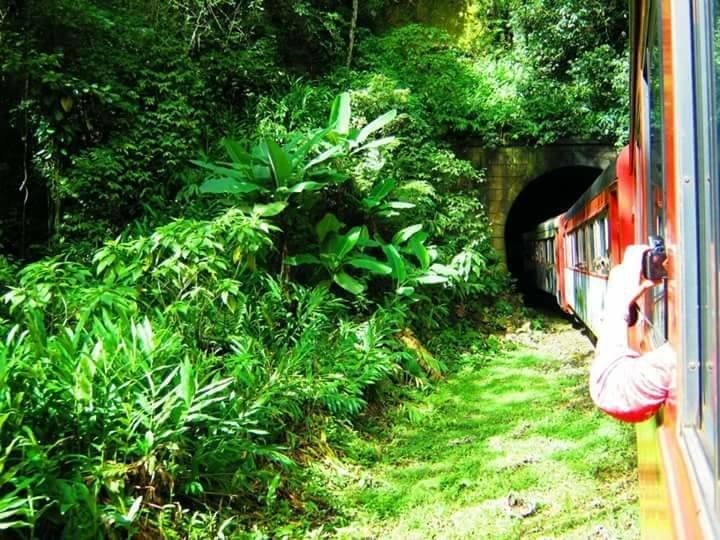

Detalhes do Roteiro
O passeio de trem Curitiba-Morretes é uma excelente opção de turismo para a melhor idade, oferecendo conforto, acessibilidade e paisagens deslumbrantes.
Sinta os sabores do Paraná conhecendo as delícias de Morretes e Antonina, desde o típico barreado nos melhores restaurantes até as ruas estreitas com suas ricas tradições culturais e religiosas mantidas por sua tranquila população.
Serviços incluídos no pacote:
Traslado in/out do hotel ou residência até a Estação Rodoferroviária de Curitiba, (somente para endereços localizados em um raio de até 7km);
Bilhete de trem na Categoria escolhida;
Serviço de bordo com lanche;
Bebidas à vontade (água, chá, suco, refrigerante e cerveja, conforme a categoria escolhida);
Tarifas
| Categoria Vagão | Guia bilíngue | Valor por pessoa |
|---|---|---|
| Turística | Sim | R$ 395.00 |
| Boutique | Sim | R$ 549.00 |
| Litorina | Sim | R$ 590.00 |
Galeria de Fotos




